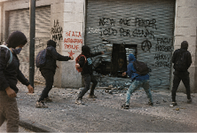
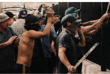
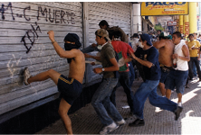

Miercoles 24 de Junio de 2001
![Texto estilizado que dice la palabra ORION con un diseño minimalista y líneas finas.
Descripción generada con IA]()
36
Realizamos a mano los carteles escolares, mostrando como si estudiantes los hubiesen hecho, entre ellos el aviso de misa na-videña que ayuda a envolver el mundo de colegio catolico pero que sutilmente muestra la crisis junto al cartel de egresados de 2001, agregamos un guiño colo-cando el nombre de todo el crew con los nombres de egresados, también agregamos mochilas en el patio junto a los extras con ese tono gris casi llegando al negro junto a botellas de agua verde
En la escena 0 teníamos el desa-fío de conseguir y manipular las fotos que había tomado Ignacio, nos dificulto el proceso por el poco tiempo de producción que teníamos para llevarlas a cabo. Para darle una estética sacada de un rollo solaris 100 iso, en la que estuviera Nicolás formando parte de saqueos, tomamos el uso de la IA para integrarlo y photoshop para darle dicha estética y arre-glar algunos detalles más.
El kiosco escolar se resignificó a partir de gráficas, carteles de precios, papeles y colores más cercanos a la época, evitando que se perciba como un elemen-to contemporáneo. Del mismo modo, los carteles actuales y ele-mentos modernos de la locación fueron pensados para ser tapa-dos, reemplazados. Hicimos uso de la tipografía wordart, típica de la época.
y carpetas de la epoca para que los elementos convivan, tambien agregamos dos pelotas de fut-bol en la que una de ellas estaba recostada al lado de la pared para dar mas textura al espacio.



Todo esto nos permitió transfor-mar el colegio en un espacio pri-vado católico verosímil del 2001. El patio queda como un lugar seco, expuesto y poco contene-dor, donde el orden institucional convive con el desgaste, el calor y la violencia latente.